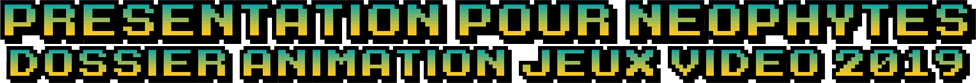

La VR est là, et elle ne partira plus. Ce petit guide à destination des médiateurs numériques éclaire certains points sur la technologie et porte quelques conseils que j’espère utile pour utiliser à plein potentiel la réalité virtuelle. Ainsi seront développé un historique rapide de la VR, un guide d’achat pour ne pas se perdre parmi les multiples casques vendus sur le marché, un guide d’utilisation, quelques pistes de réflexion sur les animations possibles, et deux trois autres choses encore.
Dossier 2020 à destination des médiateurs numériques, avec des conseils pour la création d'un fond destiné à être prêté, ainsi qu'une réflexion sur les animations et la médiation. Compilation de trois années de travail et de réflexions tranversales. J'ai essayé de faire disparaitre les sources redondantes, certaines citaient des chiffres identiques et des analyses similaires. Toutes mes excuses s'il en reste, par mégarde.
Cette version est une version incomplète ne pas faire apparaitre le nom de mon ancienne médiathèque et de son historique d'animations. Le dossier original comportait 20 pages de plus.

Le dossier 2019 à destination des agents qui ne sont pas encore familiarisé avec le jeu vidéo. Il contient une explication de ce qu'est le PEGI, la présentation des genres majeurs dans le jeu vidéo, quelques données utiles sur le jeu vidéo en médiathèques et la présentation d'animations qui eurent lieu en 2018 et en 2019 sur mon lieu de travail. Ce qui est contenu dans ce dossier est une vulgarisation, une simplification de la réalité du marché du jeu vidéo. Certains traits sont donc grossis pour le bien de l'explication.
->>>Disponible ici<<<-
Le dossier 2019 à destination des agents qui ne sont pas encore familiarisé avec le jeu vidéo. Il contient une explication de ce qu'est le PEGI, la présentation des genres majeurs dans le jeu vidéo, quelques données utiles sur le jeu vidéo en médiathèques et la présentation d'animations qui eurent lieu en 2018 et en 2019 sur mon lieu de travail. Ce qui est contenu dans ce dossier est une vulgarisation, une simplification de la réalité du marché du jeu vidéo. Certains traits sont donc grossis pour le bien de l'explication.
Exemple de liste d'achat pour constituer un fond destiné au prêt. Cette liste était destinée à être annotée, mais elle ne le fut pas pour des soucis d'organisation. Vous pouvez également voir d'un coup d’œil rapide la liste des jeux déjà en notre possession avant la constitution de la liste d'achat de 2019.
E S A 2020
Dossier 2020 de l'E S A traduit en francais. Les chiffres clés et les statistiques autour du marché du jeu vidéo aux Etats-Unis. Une mine d'or pour comprendre le jeu vidéo et son public.
S E L L 2020
Dossier 2020 du S E L L, le syndicat français des éditeurs de logiciels de loisirs. Encore plus de chiffres, encore plus de statistiques, et encore plus de ressources utiles pour nous.
Me contacter
Pour toute question, réclamation, suggestion d'ajout ou de correction, n'hésitez pas
Si vous le souhaitez, vous pouvez me contacter à l'adresse mail suivante: La10esouris@hotmail.com